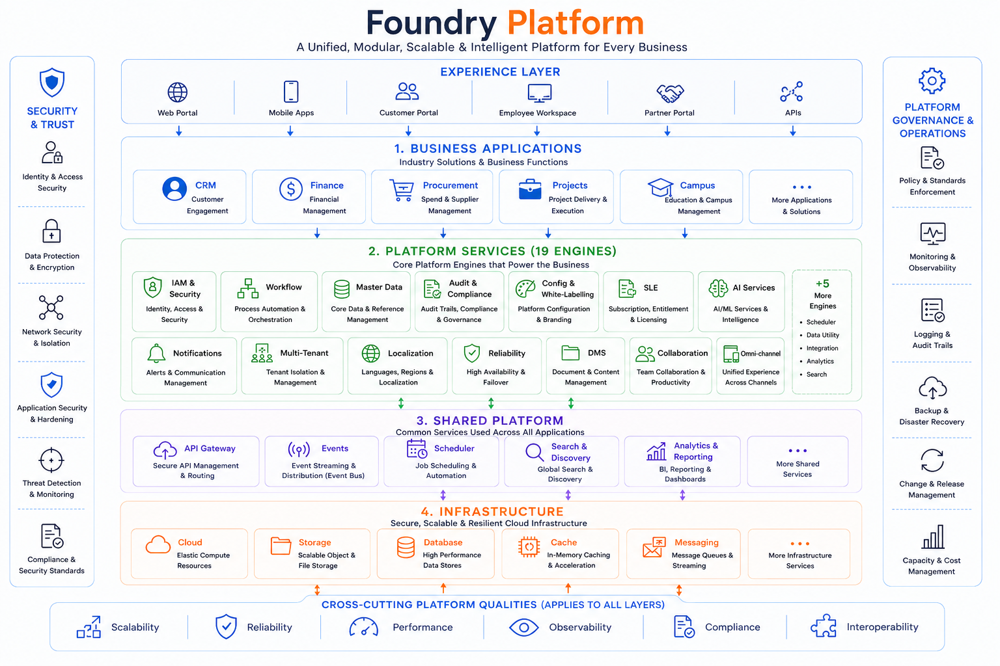
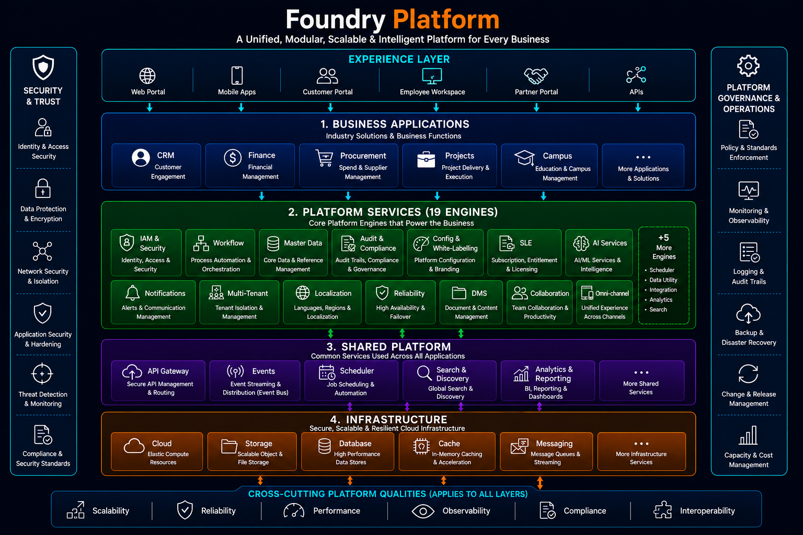

What it is
Foundry Platform is the cloud-native core of FoundrySuite. It delivers identity, workflow orchestration, integrations, content services, analytics, and AI as shared services that every module consumes.
Core Platform
The cloud-native, AI-powered platform powering every FoundrySuite solution.


One shared foundation for every FoundrySuite module and industry solution—so security, workflows, data, and intelligence stay consistent as you grow.
Foundry Platform is the cloud-native core of FoundrySuite. It delivers identity, workflow orchestration, integrations, content services, analytics, and AI as shared services that every module consumes.
Enterprises rolling out CRM, Projects, HCM, Finance, and industry suites—Foundry Build, Campus, Health, IT, and Agri—without rebuilding the same foundations for each domain.
Solutions assemble on composable platform services and engines. You configure roles, processes, and connectors once; modules and industry packs inherit the same governance and upgrade path.
Centralized IAM, audit trails, encryption, and policy controls across the suite.
Start with the modules you need and expand without re-platforming.
Shared AI and analytics that improve decisions across every solution.
Enterprise foundations that every FoundrySuite module and industry solution depends on.
Centralized IAM with SSO, MFA, RBAC, and fine-grained permissions across all FoundrySuite modules.
Configurable approvals, SLAs, escalations, and cross-module process automation without custom code sprawl.
API-first connectivity for ERP, banking, HR, IoT, and partner systems with monitoring and retry policies.
Start with the modules you need today and expand across CRM, Projects, HCM, Finance, and industry suites.
Shared intelligence for insights, recommendations, anomaly detection, and assisted operations across solutions.
Versioned documents, drawings, and records with controlled access, retention, and approval trails.
Operational dashboards, health checks, audit events, and telemetry for platform and module reliability.
Tenant isolation, multi-currency and multi-language support for global FoundrySuite rollouts.
Reusable services that accelerate delivery while keeping industry solutions consistent and upgrade-safe.
User lifecycle, directory sync, role mapping, session policy, and delegated administration.
Secure external and internal APIs with throttling, authentication, versioning, and usage insights.
Email, in-app, and event-driven alerts with templates and delivery tracking.
Immutable activity trails for security reviews, compliance reporting, and forensic analysis.
Centralized feature flags, tenant settings, and environment-aware configuration without redeploys.
Shared reference data for organizations, sites, cost centers, and partners across modules.
High-performance engines that run the business logic behind FoundrySuite workflows and intelligence.
Design, execute, and monitor multi-step processes spanning CRM, Projects, Finance, HSE, and industry suites.
Encode pricing, compliance, eligibility, and operational policies that stay consistent as modules expand.
Orchestrate sync jobs, event streams, and connectors with mapping, transformation, and error handling.
Aggregate operational metrics into dashboards and KPIs used by Foundry Analytics and industry boards.
Model-assisted scoring, forecasting, classification, and natural-language assistance across the suite.
Publish and subscribe to business events so modules react in near real time without tight coupling.
A unified, modular, scalable & intelligent platform for every business—mapped to the Foundry Platform master architecture.


Enterprise controls designed for regulated industries and multi-entity operations.
Least-privilege roles, MFA, session controls, and continuous authorization across modules.
Encryption in transit and at rest, secrets isolation, and controlled data retention policies.
End-to-end trails for user actions, configuration changes, approvals, and integration events.
Processes and controls aligned to common enterprise security and compliance expectations.
Authenticated APIs, signed webhooks, and monitored connectors that protect boundary systems.
Policy packs, approval matrices, and segregation-of-duties patterns for enterprise rollouts.
Intelligence embedded in the platform—not bolted on—so every FoundrySuite solution can benefit.
Surface anomalies, trend shifts, and performance risks from live operational and financial signals.
Recommend next actions, draft communications, and accelerate routine approvals with human oversight.
Support demand, utilization, and delivery forecasts used by Projects, CRM, and industry suites.
Role-aware AI access, audit of AI-assisted actions, and controls that keep sensitive data protected.
Choose the operating model that matches your compliance, latency, and ownership requirements.
Fully managed SaaS with continuous updates, monitored reliability, and rapid time-to-value.
Dedicated tenancy in your preferred cloud account with stronger isolation and control.
Keep selected workloads or data planes on-prem while consuming shared platform services securely.
Deployment patterns for organizations that require controlled hosting and upgrade windows.
Why enterprises standardize on Foundry Platform as the core of FoundrySuite.
Reuse identity, workflow, and integration foundations so industry solutions go live sooner.
One platform, shared services, and upgrade-safe customization reduce long-term operating cost.
Unified security, audit, and policy controls across CRM, Projects, Finance, and industry suites.
Add modules as your business expands without rebuilding core infrastructure each time.
Cross-module visibility and analytics improve decision quality for leaders and delivery teams.
Respond to market and regulatory change with configurable processes instead of brittle custom systems.
Common questions about Foundry Platform and how it supports FoundrySuite solutions.
Foundry Platform is the shared cloud-native foundation for FoundrySuite. It provides identity, security, workflows, integrations, content services, analytics, and AI capabilities used by every module and industry solution.
Yes. Industry suites run on Foundry Platform so they inherit the same security model, workflow engine, APIs, and operational governance—while delivering domain-specific capabilities for each sector.
Absolutely. FoundrySuite is composable by design. Start with the modules you need today—then add CRM, Projects, HCM, Finance, Analytics, or industry packs as your operating model evolves.
Through an API-first integration fabric and integration engine that supports connectors, event-driven flows, mapping, monitoring, and controlled data exchange with enterprise and partner systems.
Foundry Platform separates configuration and extension points from core services so you can tailor workflows, roles, and integrations without blocking platform upgrades.
Foundry Cloud (managed SaaS), private cloud, hybrid, and enterprise-hosted patterns are available depending on compliance, data residency, and operational requirements.
Power your business with a cloud-native, AI-powered enterprise platform.